Dao Ngoc Nam (Nemo)
Head of Product · Platform Architect
I architect the platforms that run brokerages.
Over ~7 years across FX/CFD brokerages, I've rebuilt entire trading stacks and architected the platforms behind them — partnerships, CRM, back office, payments, BI, and AI — most of it from the ground up, as the product owner leading small teams.
Case Studies
-
IB Partnership System
Designed and built a scalable partner engine from scratch — dynamic commission schemes, 7-level reward sharing, automated payouts. Grew the channel from 5 to ~517 partners in 6 months.
Read case study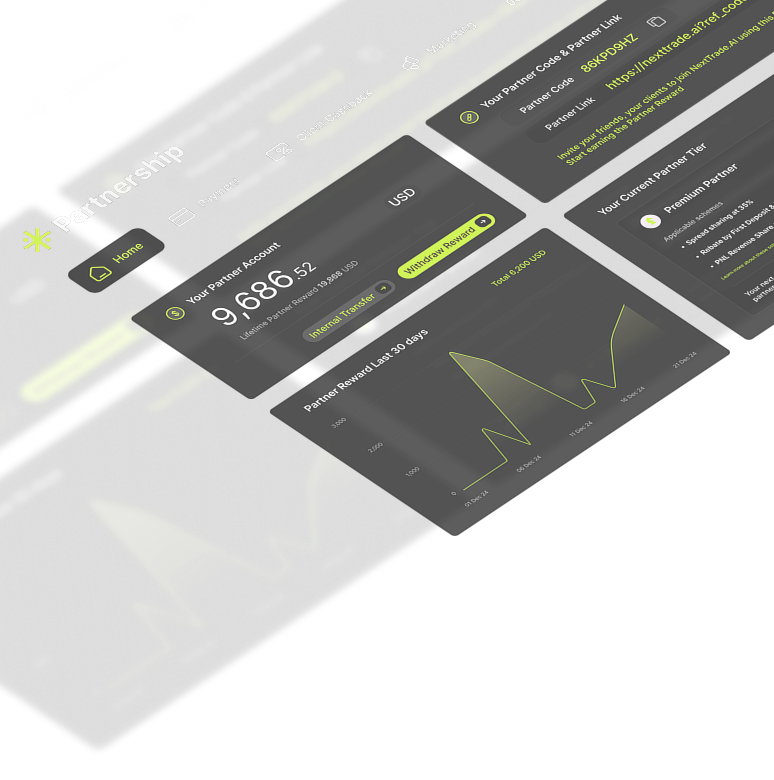
-
Trading App & Client Portal
Owned product design for onboarding, KYC, deposits/withdrawals, and live trading, end to end.
-
CRM & Back Office Rebuild
Rebuilt the core data schema and migrated the entire client base (~18k clients, ~1,600 live positions) with zero downtime — in ~3.5 months with a 4-person team.
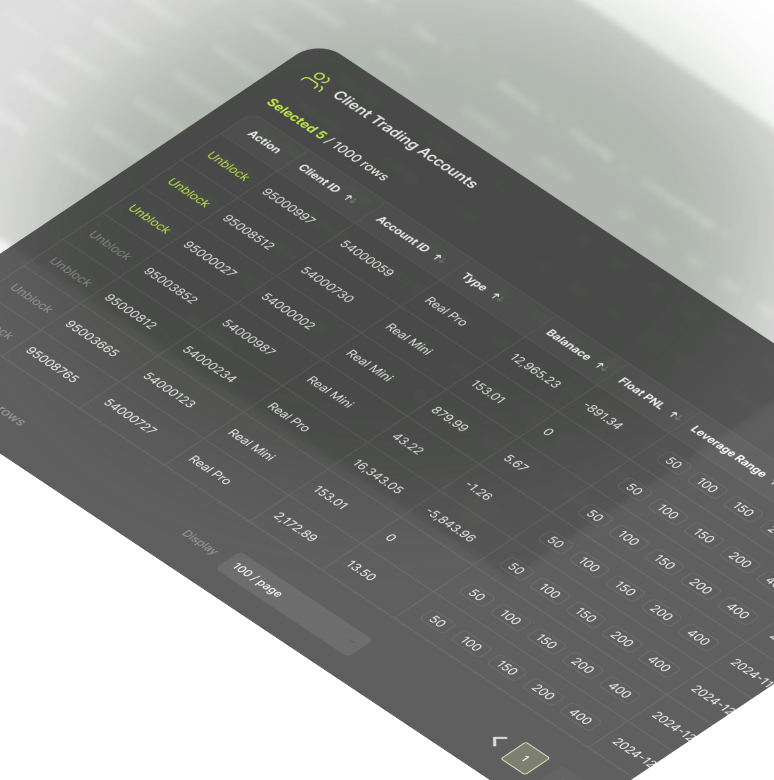
-
Data & BI Platform
Designed and built an AI-powered decision-intelligence platform, unifying ~12 data sources, 100+ metrics, and 30+ dashboards into one self-service ecosystem.
One connected system, not a pile of features.
Each module below solved a real operational problem. Built to work together — a client group defined once flows through partnerships, back office, and reporting without rework. This is the map of what I built.
Other work.
Platform & Infrastructure
-
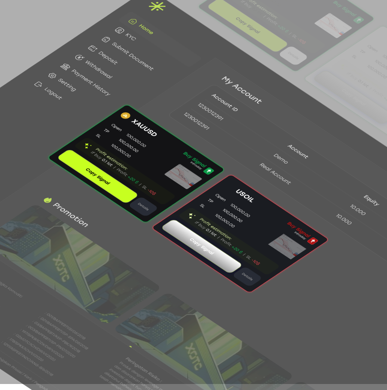
Payment & KYC
Delivered 6 payment integrations with real-time processing and streamlined KYC-to-first-deposit onboarding — raising automation from ~46% to ~84%.
-
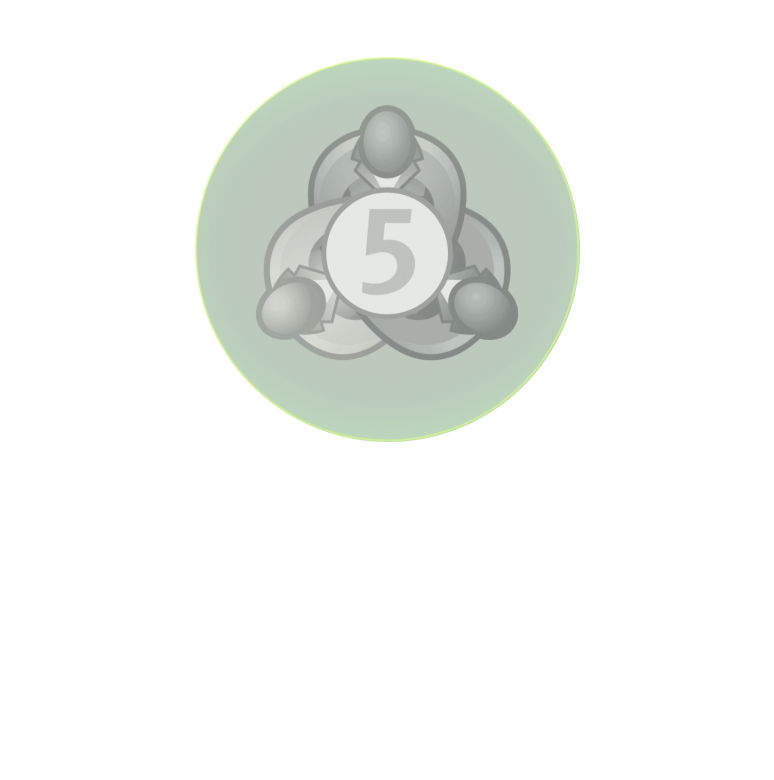
MT5 Integration
Connected the CRM to MetaTrader 5 for real-time execution and account sync.
Intelligence & Growth
-
Sales CRM Intelligence
Built an in-house CRM with real-time customer intelligence for the sales floor, cutting first-deposit follow-up from ~13h to ~1.5h.
-
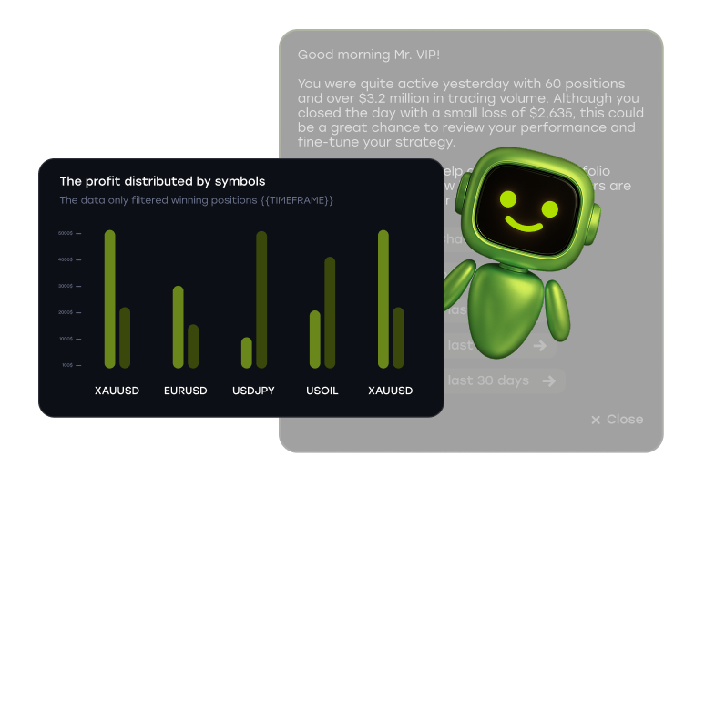
Smart Insight (AI)
Built AI-powered trading insights for clients and behavior analytics for the internal team.
-
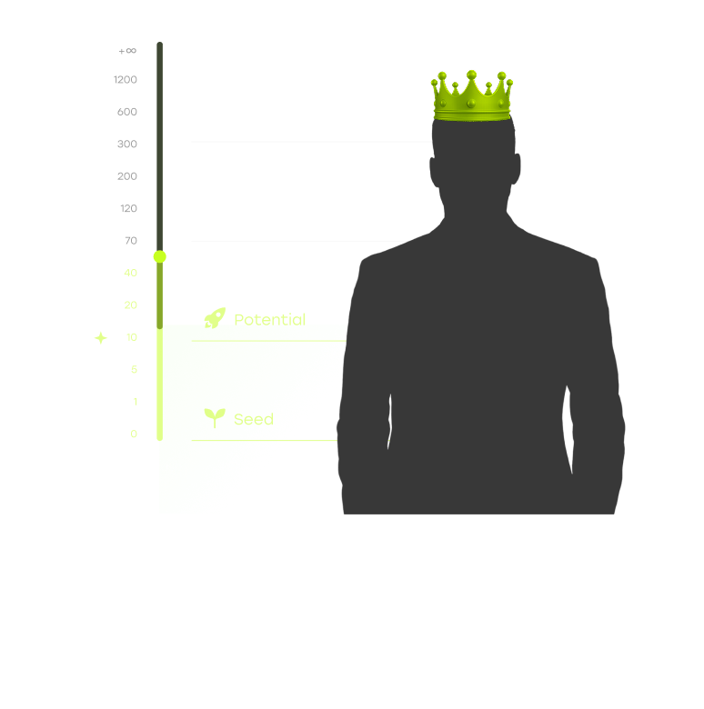
Premium Program
Launched the first premium tier for high-value traders, with segmentation, loyalty, and AI trading insights.
Growth & MarTech
-
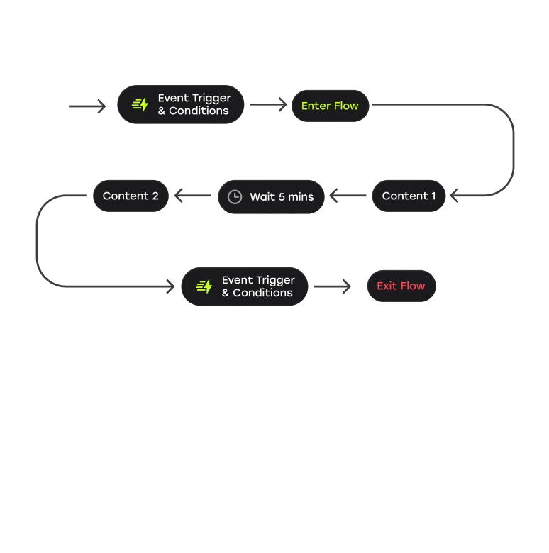
Marketing Automation
Built lifecycle messaging across triggered and event-based flows.
-
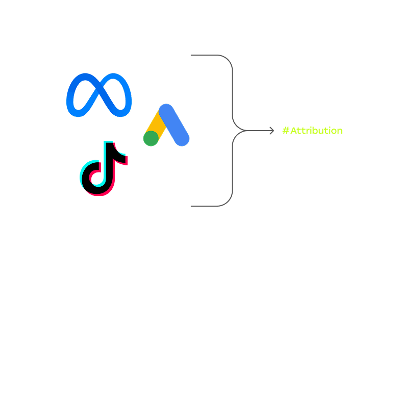
Tracking & Attribution
Built tracking and attribution pipelines across web, app, and ad platforms — web-to-app attribution and event-level data.
-
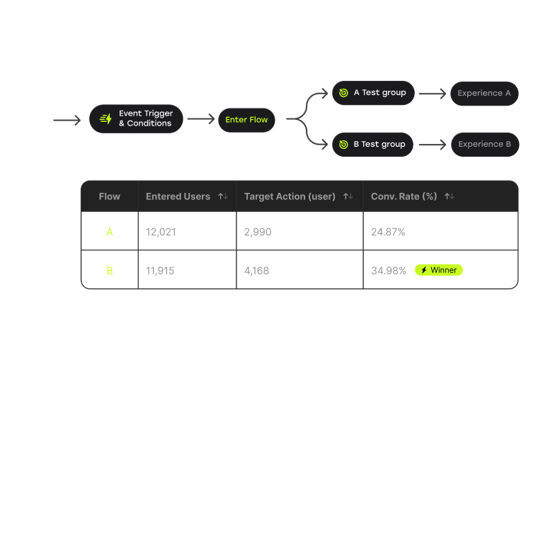
A/B Testing
Ran experiments across onboarding, promotions, and UI to lift activation and conversion.
-
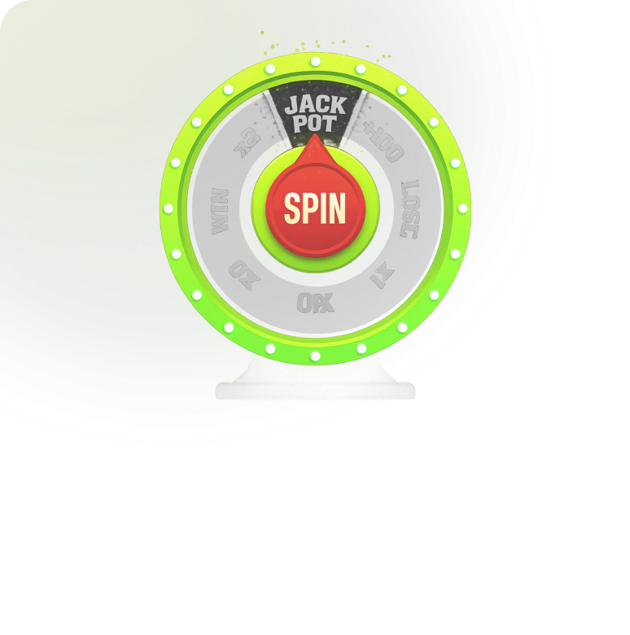
Promotion Engine
Built a rule-based bonus and campaign engine, configurable without code.
-
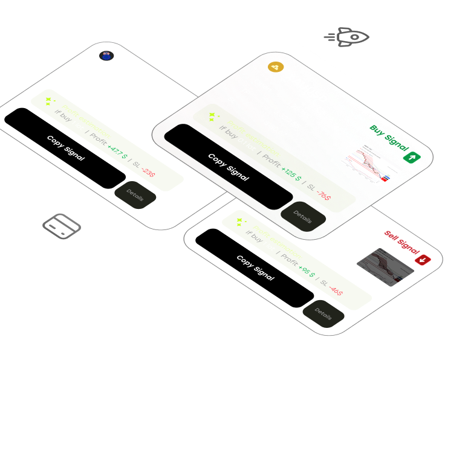
Growth Features
Built acquisition and engagement mechanics that scale without manual work.
From marketing to data to product.
I started in growth marketing, moved into business intelligence, and grew into product and platform architecture — each layer built on the last. Over 7+ years across FX/CFD brokerages, I've gone from running acquisition campaigns, to rebuilding a company's entire analytics function, to architecting trading platforms from the ground up. That path is why I design systems the way I do: business goals first, data as the backbone, product as the outcome.
-
2019
Social Media Specialist · Vietnamese marketExness Group
-
2021
Digital Marketing ManagerHSB Investasi
-
2022
Head of Business IntelligenceMarkets.com
-
2024 – now
Head of Product & Platform ArchitectHSB Investasi
How I work.
- System thinking before feature thinking I design flows, data architecture, and interconnections first; features are the outcome of a system that's right underneath.
- Ship fast, stay flexible Speed is a product strength. I build modular so I can pivot and expand without breaking what's live.
- Business first, technology follows Technology serves real business goals and workflows, never the reverse.
- Built to delight users Operational UX matters. Interfaces should lighten the work, not add to it.
The team I led.
I worked hands-on with a small engineering team — backend, frontend, mobile, analytics — often across a language barrier and time zones. I owned architecture, spec, design, and QA end to end, so when work reached them, they could just build.
Backend DeveloperSuper Chen Frontend DeveloperBingo Liu Mobile DeveloperHuong Doan Product ManagerCio Tam Frontend DeveloperThong Nguyen Analytics EngineeringManh Tran
Building brokerage infrastructure, or hiring someone who has?
I work on the systems behind FX/CFD brokerages — from trading stacks, CRM, and partnerships to BI, AI, and the data underneath. The parts that don't show, but decide everything.
Get in touch